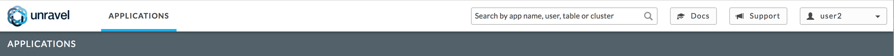
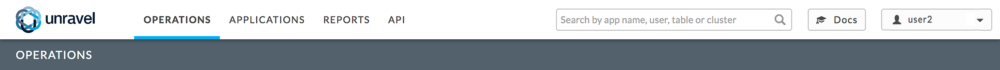
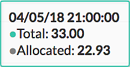

Common UI Features
Every page has the Unravel Title Bar. No matter what your permissions the pages available to you are listed on the left with the one you are viewing underlined and noted below in the black bar. To the right there is a search box, Docs Button, possibly a support button, and a pull-down menu. See Supported Roles and Role Based Access Control for information on various roles, un/restricted endusers and admin permissions including read/write or read-only permissions.
If you are enduser restricted by Role Based Access Control, you can only view the Applications page. The pull-down menu only has About and Logout available.
 If you are unrestricted enduser or an admin, you have all the pages available with possible read/write restrictions. The pull-down menu has Manage, About and Logout available.
If your admin has disabled Support there is no Support Button, for example

If you can configure the date range, time period, or cluster(s) to use these options will be available in the title bar. You set them using the pull down menus on the banner.
When there are multiple tabs, click on the tab to display its contents.
When detailed or further information is available open section (
) is in the upper right hand corner; click on it for further information.
To expand section to the width of the entire tile click on the double arrows displayed (
); to close it click on (
).
Clicking on the application name/id/workflow usually bring ups information on the appplication, fragment etc, i.e., the Spark Application Manager, table information, etc.
Lists/Tables
Can be sorted by a column, i.e., start time, in ascending or descending order. The sort column highlights the arrow indicating the sort order (). Click on the column name to use it for the sort.
Clicking on a column being used reverses the sort order.
If you can chose which columns to display a plus (
) is on the right end of the table header. Click on it to see the column headings; check/uncheck the column heading to show/hide the column.
When applicable, the application status is color coded: , , , , ,
Clicking on the app name/id/workflow usually bring ups the information on the app, i.e., the Spark Application Manager, table information, etc.
When applicable, the Notifications column (
) notes if Unravel has tuning suggestions (
), an Auto Action alert (
) or both (

).
When relevant there is an Auto Actions/Events column (

). The number of auto actions/events (0-n) triggered is noted.
When an application has a parent a link to it will appear in the GoTo column (
), its title bar or a more info glyph (
). Click on it glyph display its parent APM.
A block glyph () allows you to open the row details in a block below the tile. Click on it open/close the block. Green indicates the block is displayed; it's gray when closed
Graphs (see Operations | Usage Details | Infrastructure for detailed examples)
Hovering over a line in a graph causes the information to be displayed in a text box (
 ).
When "Applications running atmm/dd/yy hh:mm:ss" is displayed below the graph(s) a list of relevant applications, if any, running/attempted is displayed. Clicking within the graph displays the relevant, if any, applications for that point in time.
Clicking Show More (
) expands the chart to the full width of your browser. Click on the close window on the right side of title bar to return to the previous view.If graph can be displayed based upon Group By, Tags, Metric, etc., a pull down box will be displayed (
) in the upper right hand corner.
Click
to print or download the information in the graph in various forms, i.e., jpg, png, csv.
If you can zoom in/out of a diagram/execution graph the magnifiers (

,
) in the upper right hand corner. Click

to return to the initial view.